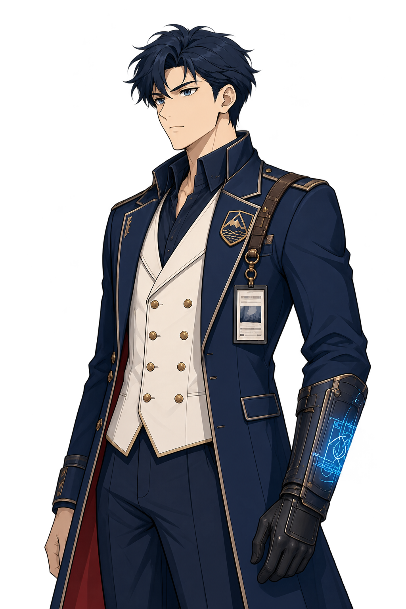
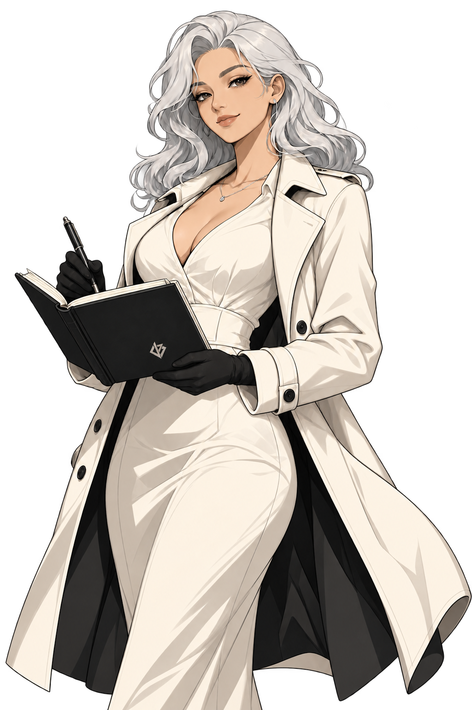
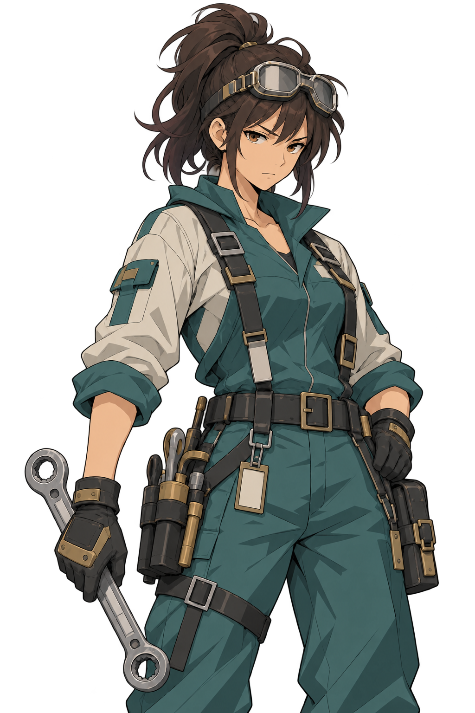
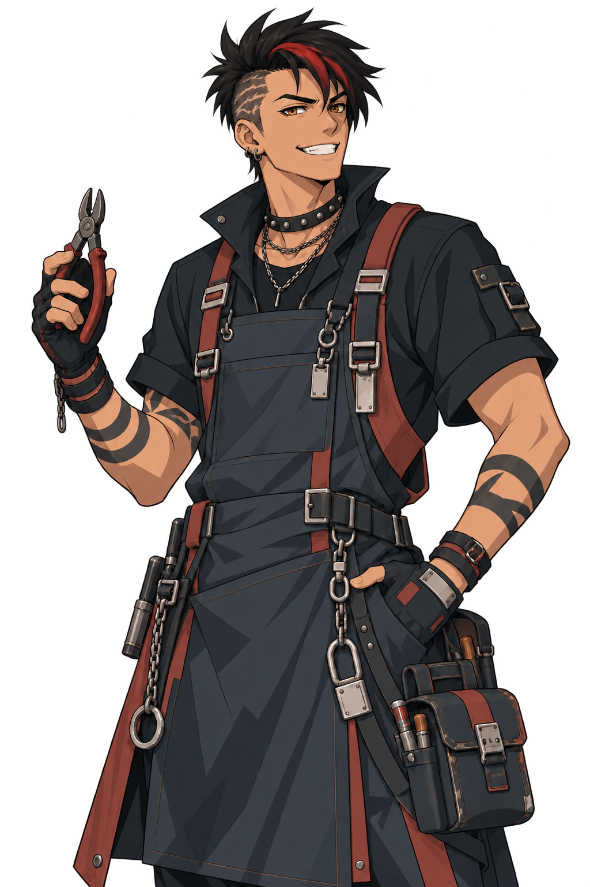
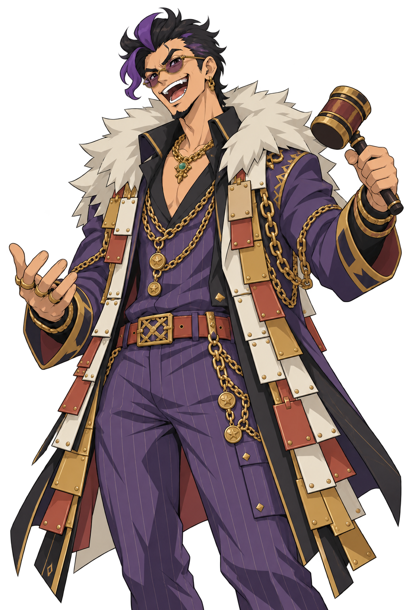

2026.10.18 · 用户确认 · 当前批次设计基准
社勇王、四机组件与六名角色
本批设计先固定
用户原话：“那么目前社勇王素材资产、角色的相关资产，这一批的设计可以先固定了”
当前源图已固定，后续从这套设计制作模型、材质、动作和同源人物资源。明显改变造型或部件关系时另作设计决定；不再沿失败稿反复重画。
查看四机全部当前图与部件设计 · 返回升级总页 · 完整文件与校验清单

这套设计继续保留什么
- 完整勇拳是同一物理核心，保留长发和原头；社勇王头冠/面罩来自轰炸机内舱加载，不更换主体或凭空长冠。
- 保留已选壮实躯干、巨拳重量、整机头身与腿足比例，不再生成细长小腿。
- 轰炸机为钝机鼻胸甲、分离肩翼/发动机和双竖翼双格栅背包；进气朝前、排气朝后。
- 列车中缝拆成两节，一节一臂，车头朝肘后、联接端朝拳，壳体收近/展开但巨拳始终独立。
- 钻探机两半分别附到两腿，膝钻、前后带面、侧轮、分段胫甲、独立踝足与宽靴依当前整机；R12图说明部件去向。
- 统一当前画法与材质语言，保留轰炸机石墨、列车象牙白、钻机橙白的分工；不统一洗色。
- 六名角色依当前母稿保留脸、发型、服装、道具、体型与各自配色；白鸢只用双手修正版。
六名角色的当前母稿
纪存、白鸢、七海，以及兜灯、唐胶、胶价王的最新配色稿；每人本批一张替代表情也登记在下表。固定的是本批设计，裁切、透明边和游戏内切换仍检查实际结果。











唯一当前制作输入：29个文件
正侧背、四机单体、局部修正、装配/状态图与人物派生均逐个绑定文件校验。整机主稿规定比例；局部修正规定对应部位，过程图不反向重造整机。
| 负责内容 | 当前文件 | SHA-256前16位 |
|---|---|---|
| 社勇王侧面；肩甲侧向造型、发动机轴向、腿前后履带与足跟 | M04-side-body-reviewed-r6d.png | e642cd0bb5f8f848 |
| 社勇王背面；中置上下双格栅背包、双竖翼、后腿橙脊板与后跟 | M04-rear-exhaust-corrected-r6b.png | dc164dcd8cf4f6c6 |
| 轰炸机单体；完整机鼻/舱窗、双主翼、双发动机、两片竖翼与独立翼根 | M04-bomber-master-r8.png | 99d7e68acb1c2206 |
| 海底列车单体；一列两节、两个外端车头、中央联接、橙白蓝窗带与短翼 | F12-subtrain-master-r8.png | 332d7d4d5726e992 |
| 钻探机单体；一车双模块、双钻、每半分组履带和白甲/橙架 | F11-drill-master-r8.png | a6158af8733402fa |
| 勇拳三视设计；同一个完整人形核心的正侧背、原头和长发、原四肢与关节 | F09-core-views-r8.png | 872fd03b3427cb2b |
| 列车臂壳展开；中缝拆节、左右开壳、车头朝肘后、拳向前的状态关系 | F12-subtrain-assembly-r8b.png | 9102d9a87412b02e |
| 轰炸机装配与肩翼让位；胸/背/翼架独立分件，翼架与核心肩关节分别活动 | M04-bomber-backpack-assembly-r12.png | 57c81f9a92f6dce4 |
| 面罩加载与拳甲强化；轰炸机内置面罩加载到原头；拳甲强化属于完整核心 | F09-bomber-mask-loading-r9b.png | cf88c79ffb7bb900 |
| 社勇王整机正面；最终整体比例、巨拳、胸机鼻、头冠、主翼、膝钻及腿足外观的首要基准 | M04-front-backpack-fins-r7.png | cf0685efa7dea8f6 |
| 勇拳单体形象；完整核心的主要造型与色块；胸口标识仍需和图6统一 | F09-brave-core-master-r2.png | 345fd65925871538 |
| 三阶段保留两格栅和双鳍；下模块从后下方翻出并对齐上模块，补齐单体与背包的来源。 | M04-backpack-fold-map-r12.png | dd6de934b2e2907c |
| 单个后向车头、平方连接端朝拳，前臂内侧有长开口；原两片侧壳收近为U形护套，巨拳独立露出。该图与原展开态仍是绘制图，不声称同模型或逐像素重合。 | F12-train-protective-cradle-r12c.png | 6098f6ce8cfd0f73 |
| 五组编号在钻机和选定侧腿局部对应；前履带转小腿、后组入足跟、座舱折内后、白甲翻胫前。右图不重画腿，保持源图比例。 | F11-component-routing-r12.png | cd589e99db7e9c60 |
| 五组编号在钻机和选定侧腿局部对应；前履带转小腿、后组入足跟、座舱折内后、白甲翻胫前。右图不重画腿，保持源图比例。 | F11-component-routing-r12.svg | 05fe0cfc19363e73 |
| 同一核心前臂不动，两壳收近/打开，小翼贴回原壳；说明腕环原位置与遮挡，非精密机械剖面。 | F12-shell-state-framework-r12.png | 2c5f397c010ce138 |
| 同一核心前臂不动，两壳收近/打开，小翼贴回原壳；说明腕环原位置与遮挡，非精密机械剖面。 | F12-shell-state-framework-r12.svg | 6aafc5adf0d3fecf |
| 纪存 · 人物立绘母稿 | H01-jicun-dialogue-r1.png | 8f8c902d40e26beb |
| 白鸢 · 人物立绘母稿 | H02-baiyuan-dialogue-r2-anatomy.png | 0cc3a65bd4f8453a |
| 七海 · 人物立绘母稿 | H03-qihai-dialogue-v1.png | 404762ecc0ff561f |
| 兜灯 · 人物配色母稿 | H04-doudeng-palette-r3.png | 4f1df9abfb2a04a6 |
| 唐胶 · 人物配色母稿 | H07-tangjiao-palette-r3.png | ae5855cb3f6eb884 |
| 胶价王 · 人物配色母稿 | H09-jiaojia-palette-r3.png | 81e59b2f6636cbbc |
| 纪存 · 专注调度 | H01-jicun-focused-speaking-r1.png | eb98a8855411510f |
| 白鸢 · 认真推演 | H02-baiyuan-concentrating-r2.png | 4c8a4783ca28fa3d |
| 七海 · 坚定交涉 | H03-qihai-firm-speaking-r1.png | b79b30c1b7132c3c |
| 兜灯 · 说明维修 | H04-doudeng-explaining-r1.png | 06ce5b9fcb2d3afc |
| 唐胶 · 认真检查 | H07-tangjiao-serious-r1.png | 5bcd20c1b37d59ad |
| 胶价王 · 措手不及 | H09-jiaojia-surprised-r1.png | 71d48aff7a0bf3e9 |


明确排除的旧稿
- H02-baiyuan-dialogue-r1.png：旧三手母稿；采用R2双手修正版。
- H02-baiyuan-concentrating-r1-rejected-three-hands.png：继承三手错误的表情稿；采用R2。
- F11-drill-assembly-r8.png：腿部履带与整机不一致；采用既定整机及R12部件归属。
- F11-leg-kit-source-locked-r9.png：错误长腿比例，不作正向制作来源。
- F11-leg-proportion-redraw-r10.png：未进入最终选择，仅保留历史补充。
- F12-train-two-states-r12a-rejected.png：错误封闭长车厢和粘附拳头。
- F12-train-two-states-r12b-rejected.png：重复车头、封闭车厢，停止采用。


接下来按固定设计制作
可做低模、分件、UV、贴图、材质、绑定、共享动作适配和同源裁切。技术性修边或净空调整不能演变成重新设计头胸、肩翼、拳体、腿长或角色形象。
本批源图的“等待设计确认”已解除，随后已按用户要求集中交给“战斗主玩法打磨”，见交接内容与原发送记录。三维接入和实测由主玩法安排，本会话未改它的台账。模型、连续音画、正常战棋镜头与运行接入按真实制作结果分别验证；整项工务城整改状态不因设计固定而改为完成。